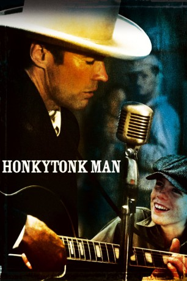

#12002 Honkytonk Man
 
 IMDB-Wertung: 6.6 / 10
IMDB-Wertung: 6.6 / 10  Tomatometer: 93
Tomatometer: 93  Metascore: 50
Metascore: 50 
Red Stovall sieht aus, als habe er schon bessere Zeiten gesehen. Versoffen, verlebt und todkrank glaubt er nach wie vor an seine große Chance. Mit seinem cleveren Neffen Whit verläßt er eines Morgens fluchtartig das verträumte Oklahoma und tritt zu einer abenteuerlichen Fahrt durch die USA an. Vor Augen nur ein Ziel: den großen Erfolg.
Jahr: 1982
Dauer: 117 Minuten
FSK: 12
Land: USA Studio: Warner Bros.Tonspuren: DD5.1 - ,
Untertitel:
Auflösung: 1080p (1920x1080) Größe: 5529 MB
Genre: Drama, Musik, Komödie, Western
Regisseur:  Clint Eastwood
Clint Eastwood
Drehbuch: Clancy Carlile, Clancy Carlile
Soundtrack: Steve Dorff
Darsteller:
 Clint Eastwood als Red Stovall
Clint Eastwood als Red Stovall Kyle Eastwood als Whit
Kyle Eastwood als Whit John McIntire als Grandpa
John McIntire als Grandpa- Alexa Kenin als Marlene
- Verna Bloom als Emmy
 Matt Clark als Virgil
Matt Clark als Virgil Barry Corbin als Arnspriger
Barry Corbin als Arnspriger Jerry Hardin als Snuffy
Jerry Hardin als Snuffy Tim Thomerson als Highway Patrolman
Tim Thomerson als Highway Patrolman Macon McCalman als Dr. Hines
Macon McCalman als Dr. Hines Joe Regalbuto als Henry Axle
Joe Regalbuto als Henry Axle Gary Grubbs als Jim Bob
Gary Grubbs als Jim Bob- Linda Hopkins als Blues Singer
- Bette Ford als Lulu
 Tracey Walter als Pooch
Tracey Walter als Pooch- Susan Peretz als Miss Maud
 John Russell als Jack Wade
John Russell als Jack Wade Charles Cyphers als Stubbs
Charles Cyphers als Stubbs- Marty Robbins als Smoky
- Ray Price als Bob Wills Singer
- Porter Wagoner als Dusty
- Hugh Warden als Grocer
- Robert V. Barron als Undertaker
- DeForest Covan als Gravedigger
 Lloyd Nelson als Radio Announcer
Lloyd Nelson als Radio Announcer Roy Jenson als Dub
Roy Jenson als Dub- Merle Travis als Texas Playboy
- Rebecca Clemons als Belle
- Johnny Gimble als Bob Wills
- Jim Boelsen als Junior
- Shelly West als Opry Singer
- David Frizzell als Opry Singer
- Bob Ferrera als Oldest Son
- Tracy Shults als Daughter
- R.J. Ganzert als Rancher
- Kelsie Blades als Veteran
- Jim Ahart als Waiter
- Steve Autry als Mechanic
- Peter Griggs als Mr. Vogel
- Julie Hoopman als Whore
- Rozelle Gayle als Club Manager
- George Orrison als Jailbird
- Glenn Wright als Jailbird
- Frank Reinhard als Standin
- Sherry Allurd als Dub's Wife
- Gordon Terry als Texas Playboy
- Tommy Allsup als Texas Playboy
- Robert D. Carver als Bus Driver No. 1
- Thomas Powels als Bus Driver No. 2
- Gary Earl als Texas Playboy (uncredited)
Datei: X:\1982\Honkytonk Man (1982, FSK12, 1920x1080).mkv seit 04.11.2019
Festplatte: Gemischt-01+Anime
 Es gibt insgesamt 31 Filme in der Gruppe '1982'
Es gibt insgesamt 31 Filme in der Gruppe '1982'